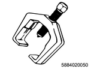
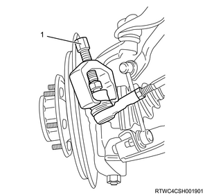
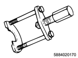
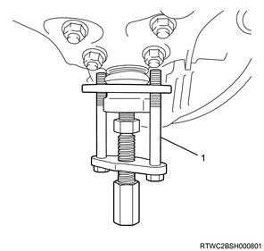

Shock absorber (2WD high ride suspension) (4WD) removal (All models)
1. Disc wheel removal
1. Remove the disc wheel from vehicle.
2. Hub cap removal
1. Remove the hub cap from the front hub.

3. Flange removal
Note
- The following applies to the 4WD vehicles.
1. Remove the flange from the front hub.
Note
- Remove the snap ring and shim, and then remove the flange from the front hub.
4. Tie rod end removal
1. Remove the cotter pin from the ball joint.
2. Remove the nut from the ball joint.
3. Remove the tie rod end from the knuckle using special tool.

SST: 5-8840-2005-0 - ball joint remover

- Ball joint remover
5. Shock absorber removal
1. Remove the stabilizer link from the lower control arm.
Caution
- Be careful not to damage the ball joint boots.
Note
- Put a setting mark to a cam bolt and the suspension cross member.
- Loosen the nut and cam bolt of the lower control arm.
2. Hold the lower control arm using the jack.
3. Remove the shock absorber from the lower control arm.
4. Remove the lower ball joint from the knuckle using special tool.

SST: 5-8840-2017-0 - ball joint remover

- 5-8840-2017-0
5. Remove the lower control arm from the frame.
6. Remove the shock absorber from the frame.